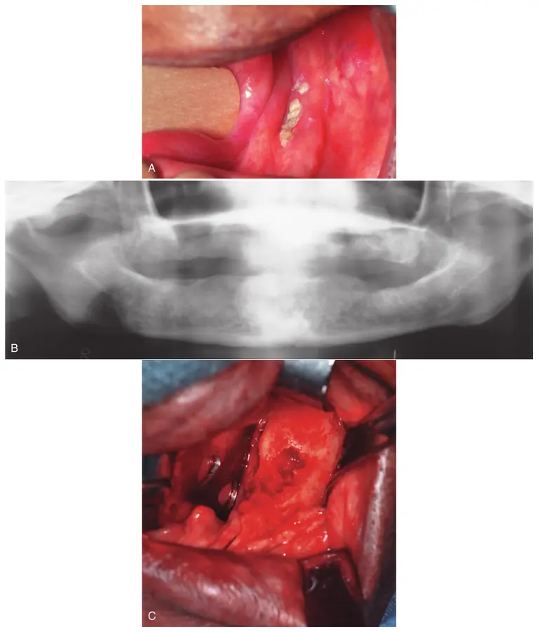
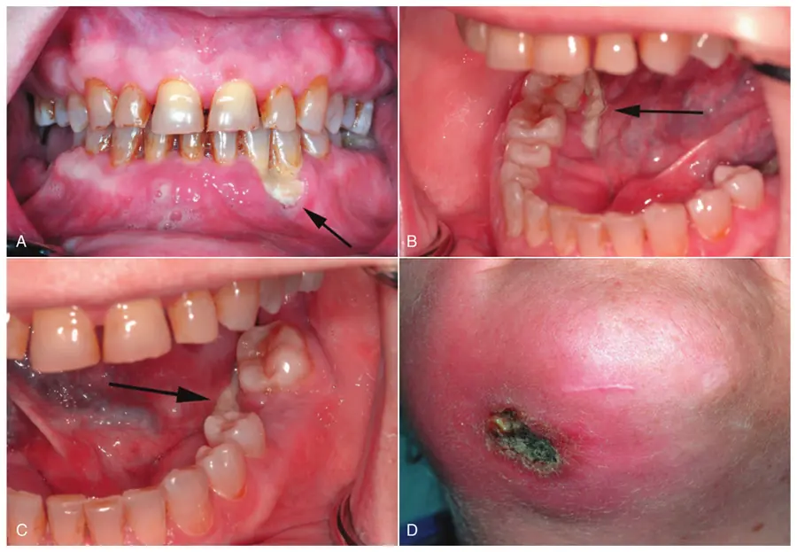

نسخه استخراجشده؛ ترجمه یا تأیید علمی انجام نشده است. وضعیت: captured
محل: بیشتر تخریب مخاطی و استئورادیونکروز بعدی در مندیبل رخ میدهد — فکی که خونرسانیاش از ماگزیلا کمتر است.

و دو عدد آستانهای که باید بدانی:
و حالا مهمترین مفهوم این درس — چرا آنتیبیوتیک اینجا کار نمیکند:
آنتیبیوتیک سیستمیک تنها گاهی لازم است، چون استئورادیونکروز یک عفونت استخوان نیست بلکه یک زخم هیپوکسیک ترمیمنیافته است.
و دلیل دوم: بهعلت کاهش عروق بافتها، آنتیبیوتیک سیستمیک بهراحتی به ناحیه دسترسی پیدا نمیکند تا کاری را که برایش در نظر گرفته شده انجام دهد.
ولی یک استثنا: در عفونتهای ثانویهی حاد، آنتیبیوتیک میتواند برای کمک به پیشگیری از گسترش عفونت مفید باشد.
استئورادیونکروز میتواند درد شدید بسازد.
مدیریت اولیه — چهار اقدام:
و یک عدد امیدوارکننده: بیشتر زخمهای کوچکتر از ۱ سانتیمتر سرانجام ترمیم مییابند — اگرچه این میتواند هفتهها تا ماهها طول بکشد.
و برای زخمهای ترمیمنیافته یا نواحی وسیع استئورادیونکروز: مداخلهی جراحی ممکن است اندیکاسیون داشته باشد — رزکسیون استخوان برهنه بههمراه حاشیهای از استخوان غیربرهنه و بستن اولیهی بافت نرم میتواند تلاش شود، و این درمان در بسیاری از موارد موفق است. نتایج بسیار بهبودیافتهای اخیراً با استفاده از درمان HBO همراه با مداخلهی جراحی به دست آمده است.
و بازسازی: تلاشهای بازسازی با پیوند استخوان برای نقصهای پیوستگی میتوانند در بسیاری از بیماران پرتودیده با موفقیت انجام شوند. تکنیکهای پیوند آزاد میکروواسکولار برای بازگرداندن نقصهای پیوستگی در این بیماران محبوبتر میشوند — چون این پیوندها خونرسانی خودشان را از اتصال مجدد رگها دارند و بنابراین کمتر به بافتهای موضعی برای ادغام و ترمیم وابستهاند.
یک عارضهی تازه: اخیراً عارضهی دهانی تازهای از درمان سرطان و پوکی استخوان شناسایی شده که شبیه استئورادیونکروز به نظر میرسد، با برهنه شدن نواحی دویتالیزهی استخوان فک.

ولی دو تفاوت بنیادین: این عارضه در بیمارانی دیده میشود که هیچ درمان پرتویی نداشتهاند، و روشهایی که برای درمان استئورادیونکروز به کار میروند برای درمان این ضایعات مؤثر به نظر نمیرسند.
نامش استئونکروز فک مرتبط با دارو (MRONJ) است — یا دقیقتر، استئونکروز فک القاشده با دارو — چون آنچه این بیماران در آن مشترکاند این است که داروی آنتیرزورپتیو مصرف میکنند، معمولاً بهعنوان مکمل شیمیدرمانی بیماری بدخیم.
تعریف بالینی: MRONJ وضعیتی از استخوان نکروتیک بهطور مزمن برهنه است؛ معمولاً دردناک است و اغلب اولیه یا ثانویه عفونی میشود.
سه دستهی اصلی داروهایی که میتوانند MRONJ بسازند:
و کدامیک بیشترین موارد را میسازد؟ از هر سه دارو، بیسفسفوناتها آشکارا بیشترین تجویز را دارند؛ پس بیشتر موارد از این دارو خواهند بود.
پاتوژنز — یک تعامل پیچیده: MRONJ از تعامل پیچیدهی متابولیسم استخوان، ترومای موضعی، افزایش تقاضا برای ترمیم استخوان، عفونت، و کمعروقی ناشی میشود.
و یک تمایز خطر که بالینی بسیار مهم است: بیمارانی که بیسفسفونات را وریدی دریافت میکنند آشکارا مستعدتر از کسانیاند که دارو را خوراکی میگیرند — پس دیدن MRONJ در بیمارانی که بیسفسفونات خوراکی برای پیشگیری یا درمان پوکی استخوان مصرف میکنند شایع نیست؛ ولی از سال ۲۰۰۶ موارد در ادبیات علمی گزارش شدند و اکنون چند صد مورد را شامل میشوند.
و سایر عوامل متابولیک که ممکن است نقش داشته باشند: دیابت شیرین، و مصرف همزمان استروئیدها، عوامل شیمیدرمانی ضدسرطان، و سیگار کشیدن.
تظاهر بالینی — و دو نکتهی تشخیصی: